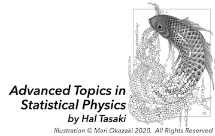

English version / 田崎晴明のオンライン講義 / 田崎晴明の YouTube チャンネル / 田崎晴明のホームページ
Advanced Topics in Statistical Physics by Hal Tasaki (Japanese)
統計物理学にかかわる少し進んだ大学院レベルの話題についての、互いにほぼ独立したミニコース集です。学習院大学大学院での講義にもとづいています。
今は古典系についての二つのミニコースと量子系についての一つのミニコースがあります。これから増やせればうれしいです。
英語の手書きスライドを使って日本語で講義しました(一部は、同じ内容の英語版ミニコースもあります)。スライドはすべて以下からダウンロードできます。
かっこいいイラストは、おかざき真里さんが拙著のために描い下さったものです。今回、再利用を許可してくださった、おかざき真里さんに感謝します。
2次元イジング模型における相転移の存在証明 / Proof of the existence of a phase transition in the two-dimensional Ising model
強磁性体を理想化したモデルであるイジング模型（正しくは、Lenz-Ising 模型）は、古典統計力学の標準的な素材であり、無限自由度の系が示す相転移現象を深く理解・研究するための格好の舞台である。
ここでは、もっとも基本的な2次元の強磁性イジング模型には相転移が存在することを厳密に証明する。
Part 1 で背景と動機を説明したあと、Part 2 でモデルを完全に定義し、主要な定理を述べる。
Part 3 では、自由エネルギー密度の無限体積極限が存在し、境界条件の選択に依存しないことを証明する。
こうして定まった自由エネルギー密度の右微分によって自発磁化を定義する。これは、熱力学にもとづく、もっとも正統な自発磁化の定義である。
そして、Part 4 と Part 5 で、それぞれの確率幾何的な表現を導入することで、十分に高温では自発磁化がゼロであること、十分に定温では自発磁化が正である（つまり、自由エネルギー密度が微分不可能である）ことを証明する。この二つのパートがこのテーマの要である。
ここでは、統計力学の基本的な知識（特にカノニカル分布の定義と応用）を仮定するが、それ以外には特段の知識は仮定しない。必要な事実はすべて説明し、証明する。
数学については、解析学の初歩的な知識と集合の標準的な記法だけを前提にする。
Lectures
Playlist in YouTube
Main references
Related references
2 次元 XY 模型には強磁性秩序がないこと / The absence of ferromagnetic
order in the two-dimensional XY model
古典 XY 模型は、ある種の異方性をもつ磁性体のモデルであり、また、超伝導体や超流動体の有効モデルでもある。
理論的には、連続的な対称性をもつもっとも簡単なスピン系と位置付けられる。
連続的な対称性をもつスピン系の挙動は、とくに2次元では、Lenz-Ising 模型などの離散的な対称性をもつスピン系とは本質的に異なっている。
2 次元の XY 模型は Kosterlitz-Thouless (KT) 転移と呼ばれる「エキゾチックな」相転移を示すことが知られている。
ここでは、XY 模型の低温でのふるまいを近似的に記述する Wegner のスピン波近似、そして、スピン波近似の結果が相関関数（と磁化）の厳密な上限を与えることを示す McBryan-Spencer の定理を紹介することを主要な目標にする。
Part 1 では少し時間をかけて、メインの内容と関連する古典スピン系（Ising 模型、XY 模型、Heisenberg 模型）の相転移についての一般的なことがらを解説する。
Part 2 は XY 模型の定義の整理なので短い。
Part 3 では、Wegner のスピン波近似をていねいに解説する。ここで扱うのは大胆な近似理論なのだが、順を追って計算をくわしく解説したので、かなり長くなってしまった。
Part 4 がメインとなる McBryan-Spencer の定理の証明である。定理は強力だが証明は魔法のように簡明である。
Part 5 では、ランダムカレント表示を用いて高温では相関関数が指数関数的に減衰することを証明する。これは一種の付録のつもりで用意したのだが、それなりに面白いと思う、
ここでは、統計力学の基本的な知識（特にカノニカル分布の定義と応用）を仮定するが、それ以外には特段の知識は仮定しない。必要な事実はすべて説明し、証明する。
数学については、解析学の初歩的な知識と集合の標準的な記法だけを前提にする。
Lectures
Playlist in YouTube
Main references
-
F. Wegner, Spin-Ordering in a Planar Classical Heisenberg Model, Z. Phys. 206: 465-470 (1967).
-
V.L. Berezinskii, Destruction of long-range order in one-dimensional and two-dimensional systems having a continuous symmetry group i. classical
systems. Soviet Journal of Experimental and Theoretical Physics, 32: 493-500, (1971).
-
P.C. Hohenberg, Existence of Long-Range Order in One and Two Dimensions,
Phys. Rev. 158: 383 (1967).
-
N.D. Mermin and H. Wagner,
Absence of Ferromagnetism or Antiferromagnetism in One or Two-Dimensional Isotropic Heisenberg Models,
Phys. Rev. Lett. 17: 1133 (1966); Erratum Phys. Rev. Lett. 17: 1307 (1966).
-
O.A. McBryan and T. Spencer,
On the decay of correlations in SO(n)-symmetric ferromagnets,
Comm. Math. Phys. 53: 299-302 (1977).
Related references
-
Topological Phase Transitions and Topological Phases of Matter (Scientifc Background on the Nobel Prize in Physics 2016)
-
J. M. Kosterlitz and D. J. Thouless, Long range order and metastability in
two dimensional solids and superfluids.(Application of dislocation theory),
Journal of Physics C: Solid State Physics, 5(11): L124, 1972.
-
J. M. Kosterlitz and D. J. Thouless, Ordering, metastability and phase
transitions in two-dimensional systems. Journal of Physics C: Solid State
Physics, 6(7):1181, 1973.
-
J. Fr\UTF{00F6}hlich and T. Spencer,
The Kosterlitz\UTF{2013}Thouless transition in two-dimensional abelian spin systems and the Coulomb gas, Comm. Math. Phys., 81 (4): 527\UTF{2013}602 (1981).
-
J. Fr\UTF{00F6}hlich, B. Simon, and T. Spencer,
Infrared bounds, phase transitions and continuous symmetry breaking, Comm. Math. Phys. 50(1): 79-95 (1976).
-
R. B. Griffiths, Spontaneous Magnetization in Idealized Ferromagnets, Phys. Rev. 152: 240--246, 1966.
-
T. Koma and H. Tasaki, Classical XY Model in 1.99 Dimensions, Phys. Rev. Lett. 74: 3916-3919 (1995).
-
H. Tasaki, Physics and Mathematics of Quantum Many-Body Systems,
Graduate Texts in Physics (Springer, 2020).
可積分のそして非可積分の量子スピン鎖 / Integrable and non-integrable quantum spin chainsl
S=1/2 量子スピン鎖と呼ばれる量子多体系の標準的なモデルに関する、興味深い二つの話題を取り上げる。
一つは、
X 方向の外部磁場がゼロの場合にこのモデルが自由フェルミオン系と等価であり厳密に解けることを示した、Lieb, Schultz, Mattis による 1961 年の有名な結果である。
もう一つは、これとは対照的に、X 方向の磁場がゼロでない場合には、このモデルがむしろ可解でないことを示す、比較的新しい結果である。
2019 年の白石による研究を発展させて、2024 年に山口・千葉・白石はこのモデルには非自明な局所保存量が存在しないことを証明した。これは、この系が「非可積分的」であることを強く示唆している。
ここでは特別な予備知識を仮定せずこれら二つの結果をていねいに解説する。前提とする知識は、量子力学の角運動量の基本的な性質と、通常の波動関数形式で記述される多体フェルミ粒子系の初歩的な性質だけである。
とくに、消滅・生成演算子による多体量子力学の定式化（いわゆる第二量子化の方法）についての知識は仮定しない。
Lectures
Playlist in YouTube
Main references
-
E. Lieb, T. Schultz, and D. Mattis, Two soluble models of an antiferromagnetic chain, Ann. Phys. 16:
407\UTF{2013}466 (1961).
-
N. Shiraishi,
Proof of the absence of local conserved quantities in the XYZ chain with a magnetic field,
Europhys. Lett. 128: 17002 (2019).
-
N. Shiraishi,
Absence of Local Conserved Quantity in the Heisenberg Model with Next-Nearest-Neighbor Interaction,
J. Stat. Phys. 191: 114 (2024).
-
M. Yamaguchi, Y. Chiba, and N. Shiraishi,
Complete Classification of Integrability and Non-integrability for Spin-1/2 Chain with Symmetric Nearest-Neighbor Interaction,
(preprint, 2024).
-
M. Yamaguchi, Y. Chiba, and N. Shiraishi,
Proof of the absence of local conserved quantities in general spin-1/2 chains with symmetric nearest-neighbor interaction,
(preprint, 2024).
Related references